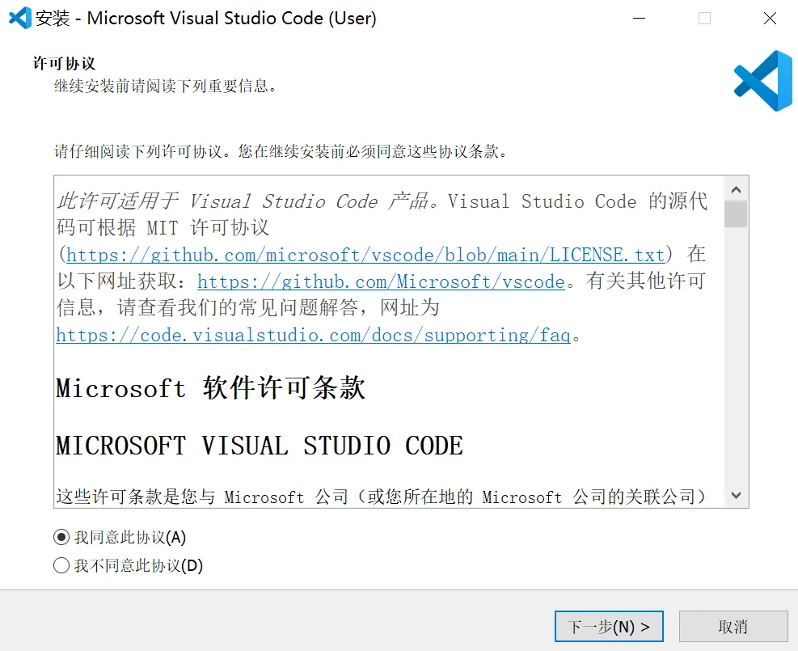

前置工作1-安装
标签: 安装, 前置工作
本文起简要讲述各位利用VS Code开发前的前置工作。
1. 下载安装文件的渠道
官方网址：https://code.visualstudio.com/download#
2. 根据自己的操作系统来选择对应的VSCode版本。
- ⬆这是以前Code官网多系统的下载界面
- 这是当下(图截于2023.12)最新的安装界面，因为后续在x86平台和Arm平台上的Windows（从11开始）仅提供了64位系统，所以开发者也只提供了x64和Arm64的安装包。
在Windows系统下，一般选择x64的安装包就行(除非你用的是32位系统，但现在理论上已经不存在了。)
在管理员账户下，应该是只能用System Installer安装的（用User Installer安装会出现错误不让安装）。 需要注意的是，如果你后来对你的电脑进行了一些大动根基的操作，如：
在Windows环境下，因为原来本地账户名是中文导致各种开发工作受阻而重装系统并由此建立了个英文名的本地管理员账户，并一直使用该管理员账户活动。
这在我们本科学习期间也往往是难以回避的事情，而它不止会发生于你们在进行某一项项目的开发进程中。在很多本科期间要学习的课程中，但凡涉及到了非国产的开发软件，中文用户名和中文路径基本都是我们需要一次次地、反复地确认的问题。
如果你真的是像上面这样的，那么请你注意你下载的安装包类型。
3. 安装
1.在下载文件夹中打开刚下好的安装包

2.勾选“我同意此协议”，点击“下一步"

- 此示例是用的User Installer包，使用System Installer包同理。
3.选择安装位置，可根据自己习惯更改。建议将安装路径放在系统盘之外，点击“下一步”

4.这里可以根据自己需求勾选（也就是说没有必勾选项），值得注意的是，如果你勾选了“添加到PATH（重启后生效）”，那么重启之后系统会帮你自动配置好环境变量，当然你也可以选择自己配置

5.点击“安装”，等待安装进度条拉满，点击“完成”

6.至此，你已经完成了VS Code的安装。
← 回到主页